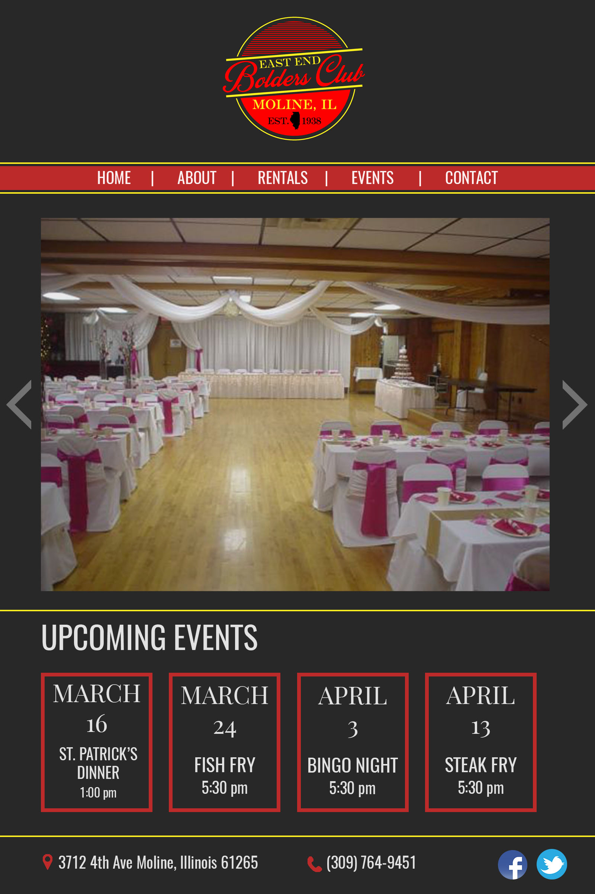
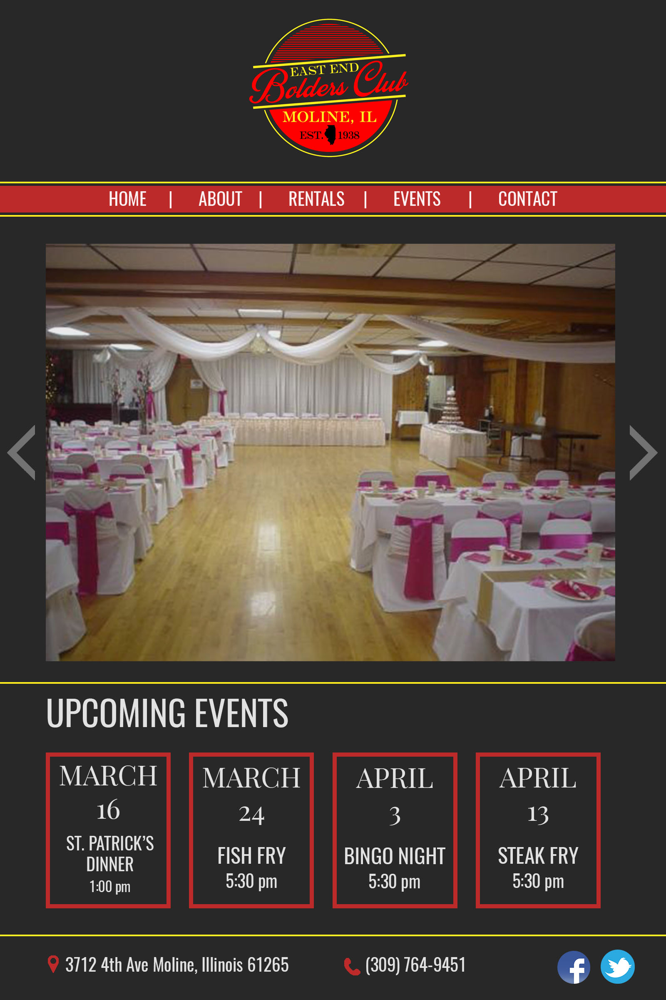

Website Mockups
These are mockups of website for various local businesses in the Quad Cities area. While interning at the Augustana Web Guild, many businesses reached out in order to get a new and improved website. Based on the client's criteria provided, I mocked up different designs for updated web pages. I focused on making these mockups more modern and simple, to improve users' experiences and improve the overall appearance of the site.
 
